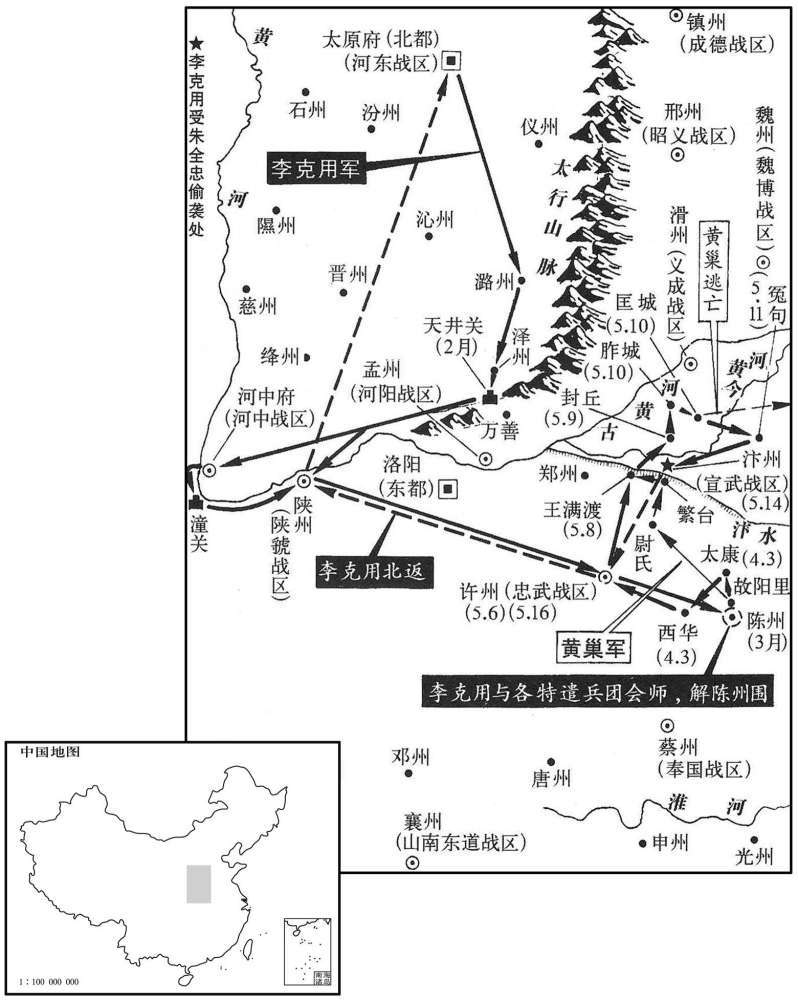

公元884年资治通鉴：本年记事、原文与白话对照
按原书编年位置阅读；追叙和史论不等于本年发生的事件。白话采用所据译本，缺译不以生成译文补齐。
卷255 · 本年记事
公元884年 · 唐僖宗惠圣恭定孝皇帝中和四年
四年〔（甲辰、八八四）〕
上传原文的注释括号有异常，字符原样保留；无法可靠划分的段落默认全文显示。
本年记事分属相邻卷，按原书顺序分别保留：第255卷 · 第256卷。
本年事件索引（现代整理）
- 鹿晏弘任兴元留后
- 乐行达获赐名彦祯
- 杨师立怨陈敬瑄欲以东川酬高仁厚，抗命后遭征召
- 周岌等求李克用救援，李克用出兵而诸葛爽拒绝让道
- 杨师立抗诏举兵，陈敬瑄奉命统辖西、东川军讨伐
- 朱全忠攻克瓦子寨，黄巢部将李唐宾、王虔裕投降
- 王镇擒黄碣降钱镠，钱镠击败刘汉宏部将娄赉
- 高澞揭发吕用之罪状，被高骈禁足后调任舒州
- 李神福以旗帜疑兵吓退攻舒州的陈儒
- 吴迥、李本再攻舒州，高澞弃城被杀，杨行愍平定叛军
- 路审中趁鄂州刺史死后募兵入据鄂州
- 赵犨兄弟坚守陈州，联兵击败黄巢后解围
- 黄巢东进遇洪水与追兵，连败后逃往兖州
- 高仁厚屯德阳迎击杨师立军
- 李克用赴汴州赴宴遭朱全忠伏击，冒雨突围
- 刘夫人劝李克用勿擅自攻汴，以书责问朱全忠
- 李克用养子李嗣源年仅十七，随军突围
- 李克用向周岌求粮遭拒，渡河返回晋阳
- 郑君雄、张士安夜袭高仁厚营寨，被伏击大败
- 高仁厚诱使逃兵归营，斩杨茂言并严明军法
- 高仁厚设伏击败郑君雄，迫其退回梓州

本年形势与背景参考图

本年形势与背景参考图

本年形势与背景参考图

本年形势与背景参考图
春，正月，以鹿晏弘为兴元留后。
春季，正月，朝廷任命鹿晏弘为兴元留后。
赐魏博节度使乐行达名彦祯。
唐僖宗赐魏博节度使乐行达名为彦祯。
东川节度使杨师立以陈敬瑄兄弟权宠之盛，〔田令孜、陈敬瑄兄弟也。〕心不能平。敬瑄之遣高仁厚讨韩秀升也，〔见上二月。〕语之曰：「成功而还，〔语，牛倨翻。还，从宣翻。〕当奏天子，以东川相赏。」师立闻之，怒曰：「彼此列藩，而遽以我疆土许人，是无天地也！」田令孜恐其为乱，因其不发兵防遏，征师立为右仆射。
东川节度使杨师立对陈敬、田令孜兄弟极度专权，心中愤愤不平。陈敬派遣高仁厚讨代韩秀升时，对高仁厚说：“大功告成后，我要奏请皇上，赏你做东川节度使。”杨师立知道这事，悖然大怒，气愤地说：“彼此都是大唐的属地，而竟然把我管辖的疆土许诺给别人，这实在是没有天公地道了！”田令孜担心杨师立发动叛乱，趁着他还没有发兵进行防范，就征调杨师立为右仆射。
黄巢兵尚强，周岌、时溥、朱全忠不能支，共求救于河东节度使李克用。二月，克用将蕃、汉兵五万出天井关；河阳节度使诸葛爽辞以河桥不完，〔谓河阳桥也。〕屯兵万善以拒之。克用乃还兵自、陕河中渡河而东。〔考异曰：唐末见闻录：「晋王三月十三日发大军讨黄巢。」太祖纪年录：「正月，太祖帅师五万自泽潞将下天井关，河阳屯万善，乃改辕蒲、陕渡河。」薛居正五代但云四年春。按四月已与巢战，三月十三发日晋阳，似太晚。又克用表云：「昨二月内，频得陈、许、徐、汴书牒。」今从旧纪。又克用自诉上表云：「遂从陕服，径达许田。」是于蒲、陕两道度兵也。〕
黄巢人马的势力还比较强大，周岌、时溥、朱全忠支持不住，一同和河东节度使李克用请求救援。二月，李克用带领蕃夷和汉族兵马五万杀出天井关；河阳节度使诸葛爽以河阳桥还没完工为理由进行推辞，在万善屯驻军队拒绝李克用经由这里。李克用于是带兵回去从陕州和河中渡过黄河向东挺进。
杨师立得诏书，怒，不受代，杀官告使及监军使，〔官告使，奉右仆射告身以征师立者也。监军使，东川监军。〕举兵，以讨陈敬瑄为名，大将有谏者辄杀之，进屯涪城，〔涪城，汉涪县地，东晋置始平郡，后魏改为涪城及潼县，隋改潼为涪城，唐初属绵州，后属梓州。九域志：在州西北五十五里。涪，音浮。〕遣其将郥镯袭绵州，不克。丙午，以陈敬瑄为西州、东州、山南西道都指挥、招讨、安抚、处置等使。〔处，昌吕翻。〕三月，甲子，杨师立移檄行在百官及诸道将吏士庶，数陈敬瑄十罪，〔考异曰：张糀耆旧传：「中和四年，四月十五日，东川杨师立反。」下载师立檄文，则云「三月三日」，自相违。今从实录。数，所具翻。〕自言集本道将士、八州坛丁共十五万人，〔按新书路岩传，岩帅西川，置定边军于邛州，扼大度，治故关，取坛丁子弟，教击刺，使补屯籍。则坛丁者，蜀中边邵民兵也。又按路振九国地，石处温事孟知祥，补万州管内诸坛点检指挥使。见得蜀中诸郡皆有坛丁。〕长驱问罪。诏削师立官爵，以眉州防御使高仁厚为东川留后，将兵五千讨之，以西川押牙杨茂言为行军副使。
杨师立接到调任他为右仆射的诏令，极其愤怒，拒不受命，杀掉朝廷的官告使和东川监军使，以讨伐陈敬为名兴兵反叛，大将中有谏阻的，杨师立当即斩杀，进军驻扎涪城，派遣他的将领郝蠲攻打绵州，没有攻克。丙午（十五日），朝廷任命陈敬为西川、东川、山南西道都指挥、招讨、安抚、处置等使。三月，甲子，（初三），杨师立向成都唐僖宗那里的文武百官和各道将士官民，历数陈敬的十大罪状，自己陈言招集本道将士、八州坛丁共十五万人，长驱直进前往问罪。僖宗颁发诏令，削去杨师立的官爵，任命眉州防御使高仁厚为东川留后，率领军队五千进行讨伐，命西川押牙将杨茂言为行军副使。
朱全忠击黄巢瓦子寨，拔之〔黄巢撤民居以为寨屋，谓之瓦子寨。〕巢将陕人李唐宾、楚丘王虔裕降于全忠。〔陕，失冉翻。降，户江翻。〕
朱全忠攻打黄巢的瓦子寨，予以攻克。黄巢的将领陕州人李唐宾、楚丘人王虔裕向朱全忠投降。
婺州人王镇执刺史黄碣，降于钱镠。〔碣，其谒翻。〕刘汉宏遣其将娄赉杀镇而代之，浦阳镇将蒋緕召镠兵共攻婺州，〔水经注：浦阳江源出乌伤县，东径诸暨县，与泄溪合。唐婺州，汉乌伤之地也，天赉十三载，分婺州之义乌、兰溪及杭州之富阳，置浦阳县。〕擒赉而还。碣，闽人也。
婺州人王镇捉拿剌史黄碣，向钱投降。刘汉宏派遣他的将领娄赉杀掉王镇而取代，镇守浦阳的将领蒋召来钱的兵马一同进攻婺州，擒获娄赉而回。黄碣是福建人。
高骈从子左骁卫大将军澞，〔从，才用翻。澞，麌俱翻。〕疏吕用之罪状二十余幅，密以呈骈，且泣曰：用之内则假神仙之说，蛊惑尊听；外则盗节制之权，残贼百姓；将佐惧，死莫之敢言。岁月浸深，羽翼将成，苟不除之，恐高氏交代勋庸，一朝扫地矣！」因呜咽不自胜。〔胜，音升。〕骈曰；「醉邪！」命扶出。明日，以澞状示用之，用之曰：「四十郎尝以空乏见告，〔澞第四十。〕未获遵命，故有此憾。」因出澞手书数幅呈之。骈甚惭，遂禁澞出入；后月余，以澞知舒州事。
高骈的侄子左骁卫大将军高，阵述吕用之的罪状，状纸达二十多篇，秘密呈交高骈，并且哭着说：“吕用之在内假借神仙鬼怪，迷惑您的耳目，在外则盗用节制权柄，残害地方百姓；将领佐官都惧怕大祸，而不敢说话。随着时光的流逝，吕用之的羽毛将要丰满，翅膀要硬起来，如果不把他铲除掉，恐怕高家世代的功劳，在一个早晨就会败落下去！”于是情不自禁地痛哭起来。高骈说：“你是喝酒过多了吧！”叫人把高搀扶出去。第二天，高骈把高的诉状展示给吕用之看，吕用之说：“高曾因手头拮据请求救助，没有获得准许，所以对我怀恨在心。”吕用之顺便拿出高原来亲手写的几封信呈送高骈。高骈十分惭愧，于是禁止高随便出入；一个月后，让高去掌管舒州事宜。
群盗陈儒攻舒州，澞求救于庐州。杨行愍力不能救，谋于其将李神福，神福请不用寸刃而逐之。乃多赍旗帜，间道入舒州，〔九域志：庐州南至舒州四百二十里。间，古苋翻。〕顷之，引舒州兵建庐州旗帜而出，指画地形，若布大陈状；贼惧，宵遁。〔贼畏庐州兵，故宵遁。兵有先声而后实，此其近之。〕神福，洺州人也。〔路振九国志曰：李神福，洺州人，隶上党军籍。高骈兼诸道行营都统，神福从州将戍淮海，因投杨行密。〕
盗贼陈儒攻打舒州，高向庐州的杨行愍请求救援。杨行愍估计靠他的兵力难以应救，便和他的将领李神福谋划对策，李神福自请不动刀枪就可赶走盗贼。于是带上许多旗帜，从偏僻的小路进入舒州，不久，李神福带领舒州的军队挂着庐州带来的旗帜纷纷出城，看着地形比比划划，就象布置大的作战阵容的样子；陈儒一伙盗贼害怕起来，乘夜间逃走了。李神福是州人。
久之，群盗吴迥、李本复攻舒州，〔复，夫又翻。〕澞不能守，弃城走，骈使人就杀之。杨行愍遣其将合肥陶雅、清流张训等将人击吴迥、李本、擒斩之，〔合肥，汉古县，唐带庞州。清流，汉全椒县地，隋置清流县，唐带滁州。〕以雅摄舒州刺史。秦宗权遣其弟将兵寇庐州，据舒城，〔开元二十三年，分合肥、庐江置舒城县，属庐州。九域志：在州西南一百一十里。〕杨行愍遣其将合肥田頵击走之。〔頵，于伦翻。〕
过了很久，盗贼吴迥、李本再次攻打舒州，高不能固守，扔下舒州城逃跑，高骈派人追上把高杀掉。杨行愍派遣手下将领合肥人陶雅、清流人张训等人率领官军攻打吴迥、李本，将他们擒获斩杀，便任命陶雅代理舒州剌史。秦宗权派遣他的弟弟带领人马侵扰庐州，占据舒城，杨行愍又派遣他的将领合肥人田将盗贼打跑。
前杭州刺史路审中客居黄州，〔路审中为董昌所拒，见上卷元年。〕闻鄂州刺史崔绍卒，募兵三千人入据之。武昌牙将杜洪亦逐岳州刺史而代之。
以前的杭州剌史路审中旅居黄州，他听说鄂州剌史崔绍死去，便招募三千人马占据了鄂州。武昌牙将杜洪也驱逐岳州剌史取而代之。
黄巢围陈州几三百日，〔几，居依翻。〕赵犨兄弟与之大小数百战，虽兵食将尽，而众心益固。李克用合许、汴、徐、之军于陈州；时尚让屯太康，〔太康，汉阳夏县，隋改曰太康，以县东有太康城也，唐属陈州。〕夏，四月，癸巳，诸军进拔太康。黄思邺屯西华，〔西华，汉县，唐属陈州。九域志：在州西八十里。〕诸军复攻之，〔复，扶又翻；下同。〕思邺走。黄巢闻之惧，退军故阳里，〔故阳里，在陈州城北。〕陈州围始解。
黄巢围攻陈州将近三百天，赵兄弟与黄巢大小战斗几百次，虽然官兵的粮食快有没了，可是大家抗击贼寇的决心更加坚定。李克用在陈州与许州、汴州、徐州、兖州的各路官军相会；当时，尚让驻守太康，夏季，四月，癸巳（初三），各路官军推进攻克太康。黄思邺驻扎西华，各路官军又攻打西华，黄思邺逃跑。黄巢听到这些战况很是恐惧，把人马撤退到故阳里，陈州开始解围。
朱全忠闻黄巢将至，引军还大梁。五月，癸亥，大雨，平地三尺，黄巢营为水所漂，且闻李克用将至，遂引兵东北趣汴州，〔趣，七喻翻。〕屠尉氏。尚让以骁骑五千进逼大梁，至于繁台；〔繁台，本师旷吹台，梁孝王增筑。水经注：吹台，在浚仪城南牧泽之右。牧泽者，今之浦关泽，即此泽也。〕宣武将丰人朱珍、南华庞师古击却之。〔丰，汉县，唐属徐州。九域志：在徐州西北一百四十里。〕全忠复告急于李克用，丙寅，克用与忠武都监使田从异发许州，戊辰，追及黄巢于中牟北王汉渡，〔按旧书帝纪，王汉渡乃汴河所经津济之地。乘其半济，奋击，大破之，杀万余人，贼遂溃。尚让帅其众降时溥，〔帅，读曰率；下同。〕别将临晋李谠、曲周霍存、甄城葛从周、冤句张归霸及〔【章：十二行本「及」下有「从」字；乙十一行本同；孔本同；张校同。】〕弟归厚帅其众降朱全忠。〔临晋，古地名，隋分猗氏，置桑泉县，天宝十三载，改为临晋，属河中府。九域志：在府北六十五里。曲周，汉古县，中废，隋分洺水复置，唐属洺州，未废为镇，属鸡泽县。「甄城」，当作「鄄城」，亦汉古县，唐带濮州。史言朱全忠后吞诸镇，多用所降黄巢将。鄄，古掾翻。考异曰：崇文院有梁功臣列传，不着撰人名氏，云：「张归厚，祖兴，父处让。归厚中和末，与伯季自冤句相率来投。」薛居正五代史：「张归霸祖进言，父实。」归厚传无父、祖，但云与兄归霸皆来降。据梁功臣传，父祖与归霸不同，当是从弟。〕巢踰汴而北己巳，克用追击之于封丘，又破之。庚午夜，复大雨，贼惊惧东走，克用追之，过胙城、匡城。〔胙城，汉南燕县，隋改曰胙城，唐属滑州。九域志：在州南九十里。宋白曰：胙城县，本古之胙国，又为古之燕国，汉为南燕县。隋文帝因览奏状，南见燕县名，因曰：「今天下一统，何南燕之有！」遂改为胙城。〕巢收余众近千人，东奔兖州；〔近，其靳翻。〕辛未，克用追至冤句，骑能属者纔数百人，〔属，之欲翻。〕昼夜行二百余里，人马疲乏，粮尽，及还汴州，欲裹粮复追之，获巢幼子及乘舆器服符印，〔乘绳证翻。〕得所掠男女万人，悉纵遣之。
两版字句有差异，建议核对原文。
朱全忠听说黄巢快要到来，带领军队回到大梁。五月，癸亥（初三），天下大雨，雨水淹没地面三尺深，黄巢的军营被水淹漫，又听说李克用将要来到，于是带领人马往东北方向的汴州奔去，进屠尉氏。尚让带领精壮骑兵五千逼近大梁，到达繁台，宣武将军丰州人朱珍、南华人庞师古将尚让击退。朱全忠又向李克用告急请求援救，丙寅（初六），李克用与忠武都监使田从异从许州出发，戊辰（初八），在中牟北面的王满渡追赶上黄巢，李克用乘黄巢人马渡到汴河一半的时候，奋勇攻打，击败黄巢的队全，斩杀一万余人，贼寇于溃退。尚让率领人马向时溥投降，其他将领临晋人李谠、曲周人霍存、甄城人葛从周、冤句人张归霸以及他的堂弟张归厚带领所部向朱全忠投降。黄巢经过汴河向北奔去，己巳（初九），李克用在封丘追上黄巢，又将黄巢打败。庚行午（初十）夜间，又下大雨，贼寇惊慌畏惧向东逃跑，李克用穷追不舍，先后经过胙城、匡城。黄巢把剩余的人马收集起将近一千人，向东奔往兖州；辛未（十一日），李克用追到冤句，统领的骑兵仅几百人，一天一夜行程二百余里，士兵和马匹都疲惫不堪，粮食也断绝了，于是回到汴州，想携带这里的粮食再次追击黄巢。李克用捉住黄巢的幼子，缴获了黄巢乘坐的车马和他的器具、服装、符节和印章，并收得黄巢以前掠抢的男女百姓有一万多，把他们全部放回去。
癸酉，高仁厚屯德阳，杨师立遣其将郑君雄、张士安据鹿、张士安据鹿硕关以拒之。
两版字句有差异，建议核对原文。
癸酉（十三日），高仁厚驻扎德阳，杨师立派遣他的将领郑君雄、张士安占据鹿头关以抗拒高仁厚。
甲戌，李克用至汴州，营于城外；朱全忠固请入城，錧于上源驿。〔晋天福五年，改东京上源驿为都亭驿。〕全忠就置，酒声乐、馔具皆精丰，礼貌甚恭；克用乘酒使气，语颇侵之，〔馔，雏恋翻，又雏睆翻。李克用盖言全忠从黄巢为寇，触其实也。〕全忠不平。薄暮，罢酒，从者皆沾醉，〔沾醉，言饮酒大醉，胸襟沾湿，不能自持也。从，才用翻。〕宣武将杨彦洪密与全忠谋，连车树栅以塞衢路，〔塞，悉则翻。〕发兵围驿而攻之，呼声动地。克用醉，不之闻；亲兵薛志勤、史敬思等十余人格鬬，侍者郭景铢灭烛，扶克用匿床下，以水沃其面，徐告以难，〔呼，火故翻。难，及旦翻。〕克用始张目援弓而起。志勤射汴人，死者数十。〔援，于元翻。射，而亦翻。〕须臾，烟火四合，会大雨震电，天地晦冥，志勤扶克用帅左右数人〔帅，读曰率。〕踰垣突围，乘电光而行，汴人扼桥，力戢得度，史敬思为后拒，战死。克用登尉氏门，〔尉氏门，汴城南门也，梁开平元年改为高明门，晋天福三年改为熏风门。〕缒城得出，监军陈景思等三百余人，皆为汴人所杀。杨彦洪谓全忠曰：「胡人急则乘马，见乘马则射之。」是夕，彦洪乘马适在全忠前，全忠射之，殪。〔射，而亦翻。殪，壹计翻。考异曰：梁太祖编遗录：「甲戌，并帅自曹南旋师，上出封丘门迎劳之。克用坚请入州内，上初此之，及于门外陈设次舍，将安泊之。克用不诺，因纵蕃骑突入，驰至上源驿。既不可遏，上乃与之并辔，送至驿亭。是日晚备宴，宴罢，复张乐，继烛而饮。克用酒酣使气，广须乐妓，颇恣无厌之欲…又以丑言陵侮于上。时蕃将皆被甲冑以卫克用。上既甚不欢，遽起图之，遂令都将杨彦洪潜率甲士入驿戮之。时夜将半，克用沈醉，忽大雷雨暴至，克用不觉，近侍人及灭烛推于床下藏之。蕃戎与我师鬬，战移时方败，杨彦洪中流矢而毙。是时阴黑，克用遇一卒，背负登尉氏门，因得悬缒而出，乘牛行数里以投其众，余亲卫数百人，皆剿之。其后克用至太原，以是事表诉于唐帝，蒲帅亦继驰书请上与克用和解，上终不释憾。」此及敬翔饰非，今不取。实录：「甲戌，李克用次汴州，驻军近郊，朱兵忠请馆于上源驿，及以腹心三百余自卫。全忠以克用兵从简少，大军在远，諆害也。是夜，置酒，宴罢，以兵围驿，纵火焚之。」薛居正五代史梁太祖纪曰：「五月，甲戌帝与晋军振旅归汴，馆克用于上驿，既而备犒宴之礼。克用乘醉任气，帝不平之。是夜，命甲士围而攻之。后唐武皇纪曰：「五月，甲戌，帝与晋军振旗归汴，馆克用于上源驿，既而备犒，宴之礼。克用乘醉任气，帝不平之。是夜，命甲士围而攻之。后唐武皇纪曰：班师过汴，汴师迎劳于封禅寺，请武皇休于府第，乃馆于上源驿。是夜，张乐陈宴席，武皇酒酣，戏诸侍妓，与汴帅握手，破贼事以为乐。汴帅素忌武皇，乃与其将杨彦洪密谋窃发，攻传舍。」按全忠是时兵力尚微，天下所与为敌者，非特患克用一人，而借使杀之，不能并其军，夺其地也，盖克用恃功，语或轻慢，全忠出于一时之忿耳。今从薛史梁纪。〕
甲戌（十四日），李克用到达汴州，在城外安营扎寨；朱全忠坚持请李克用进入城内，在上源驿为李克用设立馆舍。朱全忠为李克用置办酒席招待，有精彩的歌舞音乐，丰盛的美食佳肴，礼貌十分恭谦。李克用乘着酒兴大发脾气，多有恶语伤人之处，朱全忠心里愤愤不平。到了傍晚，酒宴结束，李克用的随从都饮酒大醉胸襟沾湿而不能自恃，宣武将军杨彦洪与朱全忠谋划，把马车连起来用树木做栅栏以堵塞主要道路，然后派出军队包围上源驿攻打李克用，呼喊的声音惊天动地。李克用已醉，不知道这一切，他的亲兵薛志勤、史敬思等十几人展开激烈的搏杀，侍卫郭景铢扑灭蜡烛，搀扶李克用藏到床下，用凉水浇李克用的脸，慢慢地告诉他所发生的灾难，李克用开始睁开眼睛拉着弓箭起来。薛志勤用箭射汴州的人，射死几十名。不一会浓烟烈火从四面扑来，恰好天下大雨，电闪雷呜，天地昏暗，薛志勤扶着李克用率领身边的几名卫兵，越过墙垣突破包围，乘着闪电的光亮向前走，汴州军队把守渡桥，经过激烈的交战李克用才过去，史敬思在后面阻击掩护，战死。李克用登上汴州城的南门尉氏门，用绳子拴住身体溜下去，得以逃出，监军陈景思等三百余人，都被汴州军队杀害。杨彦洪对朱全忠说：“北方的胡人遇有急事就乘骑马匹，我们见到有骑马人便射他。”当天晚上，杨彦洪恰好骑着马出现在朱全忠的面前，朱全忠当即射箭，杀死了杨彦洪。
克用妻刘氏，多智略，左右先脱归者以汴人为变告，刘氏神色不动，立斩之，阴召大将约束，谋保军以还。此明，克用至，〔还，从宣翻。比，必利翻，及也。〕欲勒兵攻全忠，刘氏曰：「公比为国讨贼，救东诸侯之急，〔比，毗至翻，近也。为，于伪翻。东诸侯，用左传语，谓东方诸镇。〕今汴人不道，乃谋害公，自当诉之朝廷。若擅举兵相攻，则天下孰能辨其曲直！且彼得以有辞矣。」克用从之，引兵去，但移书责全忠。全忠复书曰：「前夕之变，仆不之知，朝廷自遣使者与杨彦洪谋，彦洪既伏其辜，惟公谅察。」
李克用的妻子刘氏，智多善谋，李克用身边的人有的先从汴州城内逃脱回去，把汴州城内朱全忠发动变乱一事告诉给她，刘氏不动声色，立却将逃回来的人斩杀，暗中召集各大将军，谋划以求全军回还。等到天亮，李克用回来，要率领所部官兵去攻打朱全忠，刘氏说：“你正在为国家讨伐贼寇，解救东面各路官军的燃眉之急，今天汴州朱全忠一伙人不仁道，竟阴谋杀害你，正应当去呈诉朝廷。如果你擅自带领人马去攻打他，那么天下的人谁还能辨别这件事的是非曲直！而且那样会让朱全忠有话可说了。”李克用听从了妻子刘氏的话，带领军队离去，只是写信责备朱全忠。朱全忠回信说：“前天晚上的变乱，我实在不知道，是朝廷派遣的使臣与杨彦洪相谋划的，杨彦洪既然已经伏罪处死，只有请你体察原谅了。”
克用养子嗣源，年十七，从克用自上源出矢石之间，独无所伤。嗣源本胡人，名邈售烈，无姓。〔李嗣源始此。佶，极吉翻。〕克用择军中骁勇者，多养为子，名回鹘张政之子曰存信，〔按薛居正五代史，存信本名张污萿。〕振武孙重进曰存进，许州王贤曰存贤，安敬思曰存孝，皆冒姓李氏。〔此所谓义儿也。欧阳修曰：唐自沙陀起代北，其所与俱皆一时雄杰虓武之士，往往养为儿，号义儿军。〕
李克用的养子李嗣源，年龄十七岁，跟随李克用从上源驿出来，枪林弹雨之中，唯独没有受伤。李嗣源本来是北方的胡人，名字是邈佶烈，没有姓。李克用选择军营中勇健强悍的人，收养许多作为义子，有回纥人张政的儿子起名存信，振武人孙重进起名存进，许州人王贤起名存贤，安敬思起名存孝，都冒充李姓。
丙子，克用至许州故寨，求粮于周岌，岌辞以粮乏，乃自陕济河还晋阳。
丙子（十六日），李克用到达许州原来的营寨，向周岌请求援助粮食，周岌以粮食缺乏为理由而拒绝了，李克用于是从陕州渡过黄河回到晋阳。
郑君雄、张士安坚壁不，出高仁厚曰：「攻之则彼利我伤，围之则彼困我逸。」遂列十二寨围之。丁丑，夜二鼓，〔夜二鼓，夜二更也。持更者每一更则鼓一声，二更则鼓二声，故谓二更为二鼓，亦谓之乙夜。〕君雄等出劲兵掩击城北副使寨，杨茂言不能御，帅众弃寨走，〔帅，读曰率；下同。〕其旁数寨见副使走，亦走。东川人并兵南攻中军，仁厚闻之，大开寨门，设炬火照之，自帅士卒为两翼伏道左右。贼至见门开，不敢入，还去，仁厚发伏击之，东川兵大奔，追至城下，蹙之壕中，斩获甚众而还。
郑君雄、张士安坚守东川城堡而不出战，高仁厚说；“发动进攻对郑君雄、张士安有利而我军将要付出大的伤亡，进行围困会使郑君雄、张士安疲惫困乏而我军安闲无损。”于是布置十二个营寨将东川城堡包围起来。丁丑（十七日），夜间二更时分，郑君雄等人出动强劲军队乘官兵不备突然袭击城北副使的营寨，杨茂言抵御不住，率领人马扔下营寨逃跑，旁边几个营寨的官兵看到副使逃跑，也纷纷离去。东川人集中兵力向南攻打官军主帅所在中军，高仁厚听到这一消息，下令把营寨的大门打开，设置火炬照着这里，亲自率领士兵在大道左右埋伏下来。贼寇赶到，看见营寨的大门敞开着，不敢进去，调头往回走，高仁厚令伏兵发起进攻，东川的人马拼命奔逃，高仁厚追赶到东川城下，贼寇拥挤在堑壕里面，官军斩杀擒获大量人马后回去。
仁厚念诸弃寨走者，明旦所当诛杀甚多，乃密召孔目官张韶，谕之曰：「尔速遣步探子将数十人分道追走者，〔步深子，遗之间步以刺深敌人，因名之。探，他绀翻。〕自以尔意谕之曰：『仆射幸不出寨，皆不知，〔仁厚以平阡能等之功，进检校仆射。〕汝曹速归，来旦牙参，〔【章：十二行本「参」下有「如常」二字；乙十一行本同；孔本同；张校同；退斋校同。勿忧也。』」凡行营诸将，每旦赴大将营牙参。〕韶素名长者，〔长，佑两翻。〕众信之，至四鼓，皆还寨；惟杨茂言走至张把，乃追及之。〔九域志：梓州郪县有张杷镇。「把」，当作「杷」。〕仁厚闻诸寨漏鼓如故，喜曰：「悉归矣！」诘旦，诸将牙集，〔诘，去吉翻。〕以为仁厚诚不知也。坐良久，仁厚谓茂言曰：「昨夜闻副使身先士卒，走至张把，有诸﹖」〔先，悉荐翻。〕对曰：「昨夜闻贼攻中军，左右言仆射已去，遂策马参随，既而审其虚，复还寨中。」仁厚曰：「仁厚与副使俱受命天子，将兵讨贼，若仁厚先走，副使当叱下马，行军法，代总军事，然后奏闻。今副使既先走，又为欺罔，理当何如﹖」茂言拱手曰：「当死。」仁厚曰：「然！」命左右扶下，斩之，诸将股栗。仁厚乃召昨夜所俘虏数十人，释缚纵归。〔纵俘，使归言其事。〕君雄等闻之惧，曰：「彼军法严整如是，自今兵不可复出矣！」左传：晋人伐郑，搜焉而还，中行桓子之谋也。曰：「示之以整，使谋而来。」郑于是惧。其后卒请成于晋。用兵严整，敌人惧之，盖自古然矣。复，扶又翻。〕
高仁厚考虑到那些扔下营寨逃跑的官军，第二天早晨应当诛杀处斩的人很多，于是秘密找来掌管文书的吏员张韶，命令他说：“你快快派遣军营侦探带领几十人分头追赶逃跑的官兵，只是用你自己的意思告诉他们说：‘检校仆射高仁厚幸好没有走出营寨，一切都不知道，你们快点回去，明天早晨牙将们象往常一样去参见高仁厚，不要有什么忧虑’。”张韶向有忠厚长者之名，大家对他的话都很信，到四更时分，逃走的官军都分别回到营寨；只有副使杨茂言跑到了张把，于是极力追赶将他劝回。高仁厚听到各个寨打更的漏鼓声已和往日一样，高兴地说：“都回来了！”次日早晨，各营寨的将领集合参见高仁厚，都以为他对出逃的事确实不知道。坐了好久，高仁厚对杨茂言说：“昨天夜间听说你带头逃跑，竟跑到了张把，有这事吗？？杨茂言回答说：：“昨天夜里听到贼寇攻打主力队伍，身边的人说你已撤离了，于是快马加鞭跟随上去，后来了解到你根本没有离去，所以又回到营寨之中。”高仁厚说：“我高仁厚和你都是接受皇上的谕令，督率官军讨伐贼寇，如果是我高仁厚先行逃跑，你作为副使理当怒声叱喝我下马，进行军法处置，而代行总理军中事宜，然后奏报皇上。今天你既已先行逃跑，又欺骗蒙蔽，按理说应当怎样处置？”杨茂言拱手说：“该当死罪。”高仁厚说：“是这样！”于是命令身边的人把杨茂言拉下，将他处斩，各位将领吓得腿都发抖。高仁厚又召来几十名昨天夜里俘虏的贼寇，给们解开绳索放他们回去。郑君雄等人听说这些后很害怕，说：“高仁厚这样严格执行军法整饬营伍，从现在起咱们人马可不能再出去！”
癸未，高仁厚陈于鹿头关城下，〔陈，读曰阵；下同。〕郑君雄等悉众出战。仁厚设伏于陈后，阳败走，君雄等追之，伏发，君雄等大败；是夕，遁归梓州。陈敬瑄发兵三千以益仁厚军，进围梓州。
癸未（二十三日），高仁厚带领所部官军在鹿头关城下摆开阵势，郑君雄等人率全部人马出城作战。高仁厚在阵列后面设下埋伏，假装败退，郑君雄等人追击，中了埋伏，吃了一场败仗。这天傍晚，郑君雄逃回梓州。阵敬派发军队三千，以壮大高仁厚的阵容，进军围攻梓州。
译本中未与胡注本可靠对应的内容
以下另列供核对版本差异，不并入胡注本正文。
译本所附古文
[14]庚辰，时溥遣其将李师悦将兵万人追黄巢。
译本白话
庚辰（二十日），时溥派遣手下将领李师悦带领军队一万人追击黄巢。
卷256 · 本年记事
公元884年 · 唐僖宗惠圣恭定孝皇帝中和四年
中和四年〔（甲辰﹑八八四）〕
上传原文的注释括号有异常，字符原样保留；无法可靠划分的段落默认全文显示。
本年记事分属相邻卷，按原书顺序分别保留：第255卷 · 第256卷。
本年事件索引（现代整理）
- 高仁厚围梓州，郑君雄杀杨师立献城投降
- 李师悦等追击黄巢至瑕丘，林言斩首后首级被沙陀夺走
- 秦宗权侵扰邻镇，朱瑄援助朱全忠后结为兄弟
- 时溥献黄巢首级及家属，黄巢姬妾当面驳斥僖宗
- 朱全忠击败秦宗权
- 李克用诉朱全忠袭击谋害，僖宗只遣使劝和
- 李克用兼领麟州并荐弟克修镇昭义，进封陇西郡王
- 朱全忠加同平章事
- 王徽招抚百姓修复长安，关东藩镇请车驾还京
- 王铎见朱全忠渐骄，请求离镇，改任义昌节度使
- 王建等投奔行在，鹿晏弘弃兴元出逃
- 曹知悳据嵯峨山抗贼，被田令孜密令王行瑜杀害
- 鹿晏弘攻陷襄州并据许州，刘巨容奔成都
- 陈敬瑄请辞三川都指挥、招讨等职
- 陈岩击败泉州叛军，接任福建观察使
- 王铎途经魏博遭乐从训伏杀，随行三百余人被劫
- 邠宁军改号静难军
- 陈晟逐睦州刺史，王敬荛逐颍州刺史，朝廷授二人刺史
- 冯行袭诱孙喜渡江，斩杀群盗并打通蜀道
- 李昌言病卒，李昌符接任凤翔节度使
- 秦宗权兵分多路劫掠周边州镇，残暴过于黄巢
六月，壬辰，东川留后高仁厚奏郑君雄斩杨师立出降。仁厚围梓州久不下，乃为书射城中，道其将士曰：「仁厚不忍城中玉石俱焚，为诸君缓师十日，〔射，而亦翻。道，读曰导。为，于伪翻。〕使诸君自成其功。若十日不送师立首，当分见兵为五番，〔见，贤遍翻。〕番分昼夜以攻之，于此甚逸，于彼必困矣。五日不下，四面俱进，克之必矣。诸君图之！」数日，君雄大呼于众曰：〔呼，火故翻。〕「天子所诛者元恶耳，他人无预也。」众呼万岁，大噪，突入府中，师立自杀，君雄挈其首出降。〔考异曰：张糀耆旧传：「四年，七月一日，高仆射羽檄入城云云，师立自杀。七月三日，张﹑郑二将持师立首级出降。七月七日，高仆射上东川。」句延庆传曰：三年，五月，高公进军东川城中，飞檄入城，师立自刎。七月辛酉，师立首级至成都。」实录：「六月丙申，高仁厚奏东川都将郑君雄枭斩杨师立，传首于行在。是日，诏以仁厚为东川节度使。」续宝运录：「二月，梓州观察使杨师立反，敕差蜀将高仁厚等讨平。六月三日，收得梓州并杨师立首级至驾前。」新纪：「七月辛酉，杨师立伏诛。」今日从续宝运录，事从实录。〕仁厚献其首及妻子于行在，陈敬瑄钉其子于城北，〔钉，丁定翻。〕敬瑄三子出观之，钉者呼曰：〔呼，火故翻。〕兹事行及汝曹，汝曹于后努力领取！」三子走马而返。以高仁厚为东川节度使。
六月，壬辰（初三），东川留后高仁厚上奏说郑君雄斩杀杨师立出来投降。高仁厚围攻梓州城好长时间拿不下来，于是写了一封信用箭射入城中，对城内的将领士卒说：“高仁厚不忍心看到城内良莠不分都遭杀戮，暂缓进攻十天，让你们自己完成这一功业。如果十天内不送出杨师立的脑袋，就要把这些官兵分为五番，分番别在白天和黑夜轮流攻打，这样对于我们是很安逸的，对于你们则一定是疲困不堪。五天若还没有攻打下来，就从四面八方一同进攻，一定会攻克的。你们考虑吧！”过了几天，郑君雄对众人大声疾呼说：“天子所要杀戮的是罪魁祸首，与别的人没有关系。”大家高喊万岁，嚷嚷吵吵，冲进府第，杨师立自杀身亡，郑君雄提着杨师立的头出来投降。高仁厚将杨师立的头和他的妻子儿女送到唐僖宗那里，陈敬下令把杨师立的儿子钉死在城的北面，陈敬的三个儿子出去观看这场景，被钉的人大叫：“这种事也会轮到你们，你们以后等着努力领取吧！”陈敬的三个儿子骑上马逃了回去。朝廷任命高仁厚为东川节度使。
甲辰，武灵将李师悦与尚让追黄巢至瑕丘，败之。〔宋白曰：春秋以邾子益来，囚诸负瑕。杜预注云：鲁邑也，高平郡南平阳县西北有瑕丘城，汉为瑕丘县。败，补迈翻。〕巢众殆尽，走至狼虎谷，〔狼虎谷，在泰山东南莱芜界。〕丙午，巢甥林言斩巢兄弟妻子首，将诣时溥；遇沙陀博野军，夺之，并斩言首以献于溥。〔黄巢干符三年起兵为盗，至是凡十年而灭。考异曰：续宝运录曰：「尚让降徐州，黄巢走至碣山，路被诸军趁逼甚，乃谓外甥朱彦之云云。外甥再三不忍下手，黄巢乃自刎过与外甥。外甥将至，路被沙陀博野夺却，兼外甥首级一时送都统军中。」旧纪：「七月，癸酉，贼将林言斩黄巢﹑黄揆﹑黄秉三人首级降。」旧传：「巢入泰山，徐帅时溥遣将张友与尚让之众掩捕之。至狼虎谷，巢将林言斩巢及二弟邺﹑揆等七人首并妻子函送徐州。」新纪：「七月壬午，黄巢伏诛。」新传：「巢计蹙，谓林言曰：『汝取吾首献天子，可得富贵，毋为他人利。』言，巢甥也，不忍。巢乃自刎，不诛，言因斩之，函首将诣时溥，而太原博野军杀言与巢首俱上。」今从新传。
本段缺少可靠对应白话，原文完整保留；未使用生成译文。
蔡州节度使秦宗权纵兵四出，侵噬邻道；天平节度使朱瑄，有众三万，从父弟瑾，勇冠军中。〔瑄，荀缘翻，当作「宣」。瑾，渠吝翻。冠，古玩翻。〕宣武节度使朱全忠为宗权所攻，势甚窘，〔窘，渠陨翻。〕求救于瑄，瑄遣瑾将兵救之，败宗权于合乡。〔败，补迈翻。〕全忠德之，与瑄约为兄弟。〔朱全忠反复小人也，兵势单弱，则与朱瑄为兄弟，兵势既强，则反眼为仇敌，必诛屠以快其志而后已，如斯人可与共功名哉！
两版字句有差异，建议核对原文。
蔡州节度使秦宗权放纵士兵四处出击，侵犯邻近各道；天平节度使朱，有人马三万，堂弟朱瑾，勇猛过人，在军营中可称第一。宣武节度使朱全忠受到秦宗权的进攻，处境十分紧迫，向朱求救，朱派遣朱瑾带领军队前往救援，在合乡打败了秦宗权。朱全忠很感激他，与朱结为兄弟。
秋，七月，壬午，时溥遣使献黄巢及家人首并姬妾，上御大玄楼受之。〔大玄楼，成都罗城正南门楼。高骈之筑成都罗城，既讫功，以周易筮之，得大畜。骈曰：「畜者，养也。济以刚健笃实，辉光日新，吉孰大焉！文宜去下存上。」因名大玄城。〕宣问姬妾：「汝曹皆勋贵子女，世受国恩，何为从贼﹖」其居首者对曰：「狂贼凶逆，国家以百万之众，失守宗祧，播迁巴﹑蜀；〔祧，他雕翻。〕今陛下以不能拒贼责一女子，置公卿将帅于何地乎！」上不复问，皆戮之于市。〔复，扶又翻。〕人争与之酒，其余皆悲怖昏醉，居首者独不饮不泣，至于就刑，神色肃然。〔考异曰：张糀耆旧传：「中和三年，五月二十日，北路军前进到黄巢首级﹑妻﹑男。」今不取其年月而取其事。〕
秋季，七月，壬午（二十四日），时溥派遣使臣进献黄巢和他家人的头颅以及他的众妾，唐僖宗亲临成都大玄楼接受进献。僖宗向黄巢的众妾问话：“你们都是显贵人家的子女，世代接受国家的恩惠，为什么要跟随贼寇呀？”站在前面的一位回答说：“贼寇逞凶作乱，大唐有百万军队，却不能固守祖庙，流落到巴蜀一带，今天陛下责备一个女子不能抗拒贼寇，那么朝中的王公大臣将军统帅们又怎么说呢！”僖宗不再问话，下令全部在集市杀掉。人们争着给黄巢的众妾送酒，其余的人都悲痛恐惧昏昏沉沉地喝醉了，唯独站在前面的那位既不饮酒也不哭泣，到了处刑的时候，神态脸色肃穆坦然。
朱全忠击秦宗权，败宗权于冢水。〔败，补迈翻。〕
朱全忠攻击秦宗权，在水将他打败。
李克用至晋阳，大治甲兵，〔治，直之翻。〕遣榆次镇鴈门李承嗣奉表诣行在，自陈「有破黄巢大功，为朱全忠所图，仅能在免，将佐已下从行者三百余人，并牌印皆没不返。〔古者授官赐印绶，常佩之于身，至解官则解印绶。至唐始置职印，任其职者，传而用之。其印盛之以匣，当官者寘之卧内，别为一牌，使吏掌之，以谨出入，印出而牌入，牌出则印入，故谓之牌印。〕全忠仍牓东都﹑陜﹑孟，云臣已死，行营兵溃，令所在邀遮屠翦，勿令漏失，将士皆号泣冤诉，〔号，户刀翻。〕请复仇雠。臣以朝廷至公，当俟诏命，拊循抑止，复归本道。乞遣使按问，发兵诛讨，臣遣弟克勤将万骑在河中俟命。」时朝廷以大寇初平，方务姑息，得克用表，大恐，但遣中使赐优诏和解之。克用前后凡八表，称：「全忠勡功疾能，阴狡祸贼，异日必为国患。惟乞下诏削其官爵，臣自帅本道兵讨之，不用度支粮饷。」〔唐旧制，诸镇兵出境征讨，皆仰给度支。帅，读曰率。〕上累遣杨复恭等谕指，称：「吾深知卿冤，方事之殷，〔杜预曰：殷，盛也。余谓殷，众也，言方事之众多也。〕姑存大体。」克用终郁郁不平。时藩镇相攻者，朝廷不复为之辩曲直。〔复，扶又翻。为，于伪翻。〕由是互相吞噬，惟力是视，皆无所禀畏矣！
李克用到达晋阳，大规模地修整盔甲武器，派遣镇守榆次的将军雁门人李承嗣恭奉表文到唐僖宗那里，部陈述道：“李克用有打败黄巢的大功劳，却中了朱全忠的阴谋圈套，仅是免于一死，身边的将领辅佐官员之下跟随的三百余人，和朝廷授给的牌印都全覆没。朱全忠还屡屡在东都、陕州、孟州张贴告示，说我已经死亡，军营中的人马溃散，他命令各地拦截阻击全部斩杀，不许漏网一个，为此军营中的将领和士兵都哭诉冤屈，请求报仇。我认为朝廷最为公正，应当等皇上颁发了诏命再行动，因此安抚手下人马遵循朝纲，制止了他们要擅自报仇的请求，又回到原来的营地。现在恳求皇上派遣使臣审查讯问这一事件，发兵讨伐朱全忠，我派弟弟李克勤带领一万骑兵在河中府等候命令。”当时朝廷认为黄巢大寇刚刚平灭，为政应当宽容一些，接到李克用的表文，大为吃惊，只是派遣宦官赐发褒嘉奖励李克用诏书，劝二人和解。李克用先后共八次进呈表文，说：“朱全忠妒忌他人的功劳和才能，是阴险狡诈的乱臣贼子，将来一定会成为国家的祸患。只皇上颁发诏令削去朱全忠的官职和爵位，我亲自率领本道官兵对他进行讨伐，不用朝廷支给粮食和兵饷。”唐僖宗几次派遣杨复恭等人向李克用传达谕令，说：“我深知你的冤屈，可是现在事务繁多，你姑且以大局为重吧。”对此李克用一直愤懑不平。当时对各藩镇的相互攻打，朝廷不再为他们明辨谁是谁非。由于这样，各藩镇尽管互相侵吞，只看实力，都没有什么因禀告朝廷而畏惧的了。
八月，李克用奏请割麟州隶河东，〔麟州，本属振武节度。考异曰：新方镇表：「中和二年，河东节度增领麟州。」误也。今从唐末见闻录。〕又请以弟兄克修为昭义节度使，皆许之。由是昭义分为二镇。〔泽﹑潞为一镇，邢﹑洛﹑磁为一镇。〕进克用爵陇西郡王。克用奏罢云蔚防御使，依旧隶河东，〔武宗会昌三年，分河东云﹑蔚﹑朔三州置大同军都团练使，次年，升为都防御使。〕从之。
八月，李克用上奏请求朝廷把麟州割让隶属河东节度使管辖，又请求任命他的弟弟李克为昭义节度使，朝廷都准许了他。从此，昭义分成了两个镇。朝廷还为李克用晋升爵位为陇西郡王。李克用奏请裁撤云蔚防御使，云州、蔚州、朔州仍隶属河东节度使管辖，朝廷也依从了他。
九月，己未，加朱全忠同平章事。
九月，己未（初二），朝廷加封朱全忠为同平章事。
以右仆射﹑大明宫留守王徽知京兆尹事。上以长安宫室焚毁，故久留蜀未归。徽招抚流散，户口稍归，复缮治宫室，百司粗有绪。〔治，直之翻。粗，坐五翻。〕冬，十月，关东藩镇表请车驾还京师。
朝廷任命右仆射、大明宫留守王徽为知京兆尹牧事。唐僖宗因为长安宫殿被黄巢烧毁，所以长期留在蜀地而没回去。王徽招抚流散的百姓，长安的居民稍微回来一些，又修缮治理宫室，各官署粗略地有了些头绪。冬季，十月，关东的藩镇进呈表文请求唐僖宗回京师长安。
朱全忠之降也，义成节度使王铎为都统，承制除官。〔事见上卷二年。降，户江翻。〕全忠初镇大梁，事铎礼甚恭，铎依以为援。〔汴﹑滑邻道，而铎于全忠有恩，故欲依以为援。〕而全忠兵浸强，益骄倨，铎知不足恃，表请还朝，〔朝，直遥翻。〕徙铎为义昌节度使。
朱全忠投降的时候，义成节度使王铎是都统，受命为朱全忠封官授职。起初朱全忠镇守大梁，侍奉王铎礼节十分恭谦，王铎依赖朱仓忠为援。随着朱全忠人马的渐渐强大，他越来越骄横傲慢，王铎知道朱全忠这人靠不住，便进呈表文请求回到朝廷任职，朝廷于是将王铎调任义昌节度使。
鹿晏弘之去河中，王建﹑韩建﹑张造﹑晋晖﹑李师泰各帅其众与之俱；〔见上卷本年。帅，读曰率。〕及据兴元，以建等为巡内刺史，不遣之官。晏弘猜忌，众心不附，王建﹑韩建素相亲善，晏弘尤忌之，数引入卧内，〔数，所角翻。〕待之加厚，二建相谓曰：「仆射甘言厚意，疑我也，祸将至矣！」田令孜密遣人以厚利诱之，十一月，二建与张造﹑晋晖﹑李师泰帅众数千逃奔行在，〔诱，音酉。考异曰：实录：「九月，山南西道节度使鹿晏弘为禁军所讨，弃城奔许州。晏弘大将韩建﹑王建﹑张造﹑晋晖﹑李师泰各帅本军降。田令孜以建等杨复光故将，薄其赏，皆除诸卫将军。十一月戊午朔，建等以军三千至行在，田令孜录为假子，统以旧军，号随驾五都。」按建等既降，始遣禁军讨晏弘。实录云九月晏弘弃城去，太早。十一月又云建等降，重复。上云赏薄，下云为假子，自相违。新传：「帝还，晏弘惧见讨，引兵走许州。王建帅义勇四军迎帝西县。」按帝尚在成都，云迎帝西县，亦误也。今月从实录，事从薛居正五代史王建﹑韩建传。〕令孜皆养为假子，赐与巨万，拜诸卫将军，使各将其众，号随驾五都。〔田令孜先已募新军五十四都分隶两神策军，今得王建﹑韩建﹑张造﹑晋晖﹑李师泰五将之兵，不敢分其众隶两军，别号随驾五都。〕又遣禁兵讨晏弘，晏弘弃〔【章：十二行本「弃」上有「率众」二字；乙十一行本同；张校同。】〕兴元走。〔鹿晏弘得兴元，未期年而弃之。〕
鹿晏弘离开河中时，王建、韩建、张造、晋晖、李师泰分别率领所部人马与他一同前去，等到占据了兴元，便任命王建等人为巡内剌史，但没有派遣他们赴任。鹿晏弘猜疑各将领不再真心依附，王建、韩建二人平时相互亲近友善，鹿晏弘尤为忌恨，多次把他俩带进内室，以很厚的礼节款待他们，王建、韩建相互说：“鹿仆射以好言美意招侍我们，是在怀疑我们，大祸快要降临了。”田令孜秘密派人以丰厚利益去引诱王建等人。十一月，王建、韩建与张造、晋晖、李师泰率领几千人马逃奔到成都唐僖宗那里，田令孜把他们都收养为义子，赏赐给他们大量钱财，封他们为各卫将军，让他们分别带领自己的人马，号称随驾五都。朝廷又派遣禁卫军讨伐鹿晏弘，鹿晏弘放弃兴元城逃跑。
初，宦者曹知悳，本华原富家子，有胆略。黄巢陷长安，知悳归乡里，集壮士，据嵯峨山南，为堡自固，〔嵯峨山在京兆云阳县北十五里。〕巢党不敢近。〔近，其靳翻。〕知悳数遣壮士变衣服语言，效巢党，夜入长安攻贼营，〔数，所角翻。〕贼惊以为鬼神；又疑其下有叛者，由是心不自安。朝廷闻而嘉之，就除内常侍，赐金紫。知悳闻车驾将还，谓人曰：「吾施小术，使诸军得成大功，〔曹知悳自言贼众病于己之宵攻，已无固志，诸镇大军临之，因得成收复京城之功。〕从驾群臣但平步往来，俟至大散关，当阅其可归者纳之。」〔从，才用翻。〕行在闻之，恐其为变；田令孜尤恶之，〔恶，乌路翻。〕密以敕旨谕邠宁节度使王行瑜，使诛之，〔按光启二年，王行瑜斩朱玫，三年，始命为邠宁节度使，此时盖为邠宁将也。〕行瑜潜师自嵯峨山北乘高攻之，知悳不为备，举营尽殪。令孜益骄横，禁制天子，不得有所主断。上患其专，时语左右而流涕。〔殪，壹计翻。横，户孟翻。断，丁乱翻。语，牛倨翻。〕
当初，宦官曹知悫，本来是华原富贵人家的儿子，有勇气和智谋。黄巢攻陷长安后，曹知悫回到故乡，招集强壮勇士，占据嵯峨山南部，建筑营垒固守，黄巢的人马不敢接近。曹知悫多次派遣招集的强壮勇士变换衣服和言语，仿效黄巢手下的人，夜间进入长安攻打贼寇军营，贼寇惊恐万状以为是鬼神作怪。黄巢又怀疑手下人有叛变的，因此心神不定。朝廷得知这一情况特地嘉奖曹知悫，授给他内常侍官职，赐给金印紫绶。曹知悫听说唐僖宗要回京师长安，对人讲：“我略施小说，使各路官军取得了收复长安的大功，那些跟随皇上的百官只是轻松地来来往往，等到他们到达大散关，我要审视其中应该返回京师任职的人才能接纳。”这话传到僖宗那里，朝廷担心曹知悫会发动变乱。田令孜尤其仇视曹知悫，便暗中假借僖宗的旨意谕令宁节度使王行瑜，让他将曹知悫杀掉，王行瑜秘密派出军队从嵯峨山的北面登上高处发起进攻，曹知悫没有任何准备，全部人马都被杀死。田令孜更加骄横起来，控制皇上，使僖宗不能主断事务。僖宗厌恨田令孜的专权，经常向身边的人谈起这事而痛哭流涕。
鹿晏弘引兵东出襄州，秦宗权遣其将秦诰﹑赵德諲将兵会之，〔諲，伊真翻。〕共攻襄州，陷之；山南东道节度使刘巨容奔成都。〔刘巨容不肯追灭黄巢，欲养寇以自资，自以襄阳为菟裘也，而地夺于赵德諲，身死于田令孜之手，玩寇而邀君，果何益哉！考异曰：实录：「光启元年四月，蔡贼攻陷襄州，刘巨容死焉。」新传：「晏弘引麾下东出襄﹑邓，宗权遣赵德諲合晏弘兵攻襄州，巨容不能守，奔成都。龙纪元年，田令孜杀之。」按晏弘中和四年十一月已据许州，又，巨容所以奔成都，以天子在蜀故也。今从新传。〕德諲，蔡州人也。晏弘引兵转掠襄﹑邓﹑均﹑房﹑庐﹑寿，复还许州；〔鹿晏弘自许州从杨复光勤王，见二百五十四卷中和元年。宋白曰：均州，汉武当县地，齐永明七年，于今郧乡县置齐兴郡，西魏置兴州，寻改丰州，周武成元年，自今郧乡城移延岑城，今郡理是也。隋改均州，因均水为名。〕忠武节度使周岌闻其至，弃镇走，晏弘遂据许州，〔考异曰：实录：「鹿晏弘陷许州，杀节度使周岌，据其镇。」又曰：「初，晏弘据有兴元，都将王建等帅众归行在，乃诏禁兵讨之。晏弘惧，弃城归乡里。周岌闻其至，遁去。晏弘自称留后，朝廷因以节旄命之。」始云「杀」，后云「遁去」，自相违，今从其后。〕自称留后，朝廷不能讨，因以为忠武节度使。
鹿晏弘带领军队往东出发奔向襄州，秦宗权派遣将领秦诰、赵德率领军队与鹿晏弘会合，共同攻陷襄州。山南东道节度使刘巨容逃奔成都。赵德是蔡州人。鹿晏弘带领人马，在襄州、邓州、均州、房州、庐州、寿州各州之间辗转抢掠，又回到许州。忠武节度使周岌听说鹿晏弘来到，放弃州城逃跑，鹿晏弘于是占据了许州，自称留后，朝廷难以对他进行讨伐，便任命他为忠武节度使。
十二月，己丑，陈敬瑄表辞三川都指挥﹑招讨﹑制置﹑安抚等使；从之。〔去年以杨师立举兵，敬瑄兼三川都指挥等使，师立既死，故辞之。
本段缺少可靠对应白话，原文完整保留；未使用生成译文。
初，黄巢转掠福建，〔见二百五十三卷干符五年。〕建州人陈岩聚众数千保乡里，号九龙军，福建观察使郑镒奏为团练副使。泉州刺史﹑左厢都虞候李连有罪，亡入溪洞，〔【章：十二行本「洞」下有「合众攻福州」五字；乙十一行本同；孔本同；张校同；退斋校同。】〕岩击败之。〔败，补迈翻。〕镒畏岩之逼，表岩自代，壬寅，以岩为福建观察使。岩为治有威惠，闽人安之。〔治，直吏翻。考异曰：实录：「七月，泉州刺史陈岩逐福建观察使郑镒，自知使务。」又曰：「十二月壬寅，以岩为福建观察使。岩既逐镒，逼镒荐己为代，朝廷因命之。」按岩既逐镒，则镒不在福州，岩安能逼之荐己！新王潮传亦曰：「黄巢将窃有福州，王师不能下，建人陈岩帅众拔之。又逐观察使郑镒，自领州，招即授刺史。」按刘恕闽录：「黄巢陷闽越，岩聚众千余人，号九龙军，福建观察使郑镒奏为团练副使。左厢都虞候李连骄慢不法，纵其徒为郡人患，岩将按诛之，连奔豁洞中，合众攻福州，岩击破之。镒表岩自代，拜观察使。」今从之。
本段缺少可靠对应白话，原文完整保留；未使用生成译文。
义昌节度使兼中书令王铎，厚于奉养，过魏州，侍妾成列，服御鲜华，如承平之态；魏博节度使乐彦祯之子从训，伏卒数百于漳南高鸡泊，围而杀之，及宾僚从者三百余人皆死，掠其资装侍妾而还。〔史言王铎以承平之态处乱世，至于丧身亡家，诲盗诲淫，自取之也。从，才用翻。还，从宜翻，又如字。〕彦祯奏云为盗所杀，朝廷不能诘。
义昌节度使兼中书令王铎，生活享受极其丰厚，当他经过魏州时，侍从众妾竟站成一排，穿着打扮鲜艳华丽，像天下太平时的样子。魏博节度使乐彦祯的儿子乐从训，在漳南鸡泊一带设下几百名伏兵，围攻并将王铎杀掉，连同王铎的宾客幕僚三百多人也都处死，然后掠抢王铎所带的行李侍妾回去。乐彦祯上奏说王铎被盗贼杀害，朝廷也未能查问。
赐邠宁军号曰静难。〔难，乃旦翻。〕
朝廷赐宁军名号为静难。
是岁，余杭镇使陈晟逐睦州刺史柳超，颍州都知兵马使汝阴王敬荛逐其刺史，〔汝阴，汉县，唐带颍州。荛，如招翻。〕各领州事，朝廷因命为刺史。
这一年，余杭镇使陈晟驱逐睦州剌史柳超，颍州都知兵马使汝阴人王敬荛赶走当地剌史，分别主持本州事宜，朝廷于是分别任命他们为睦州剌史、颍州剌史。
均州贼帅孙喜聚众数千人，谋攻州城，刺史吕烨不知所为。都将武当冯行袭伏兵江南，〔武当，汉县，唐带均州。江南，汉江之南也。帅，所类翻。将，即亮翻。〕自乘小舟迎喜，谓曰：「州人得良牧，无不归心，然公所从之卒太多，州人惧于剽掠，〔剽，匹妙翻。〕尚以为疑。不若置军江北，独与腹心轻骑俱进，行袭请为前道，〔道，读为导，一读如字。以请为前道告谕为一句，言先路告谕均州之人也。请为，于伪翻。〕告谕州人，无不服者矣。」喜以为然，从之；既渡江，军吏迎谒，伏兵发，行袭手击喜，斩之，从喜者皆死，〔从，才用翻。〕江北军望之俱溃。山南东道节度使上其功，〔上，时掌翻。考异曰：薛居正五代史行袭传曰：「洋州节度使葛佐奏辟为行军司马，请将兵镇谷口，通秦﹑蜀道，由是益知名。」新传曰：「行袭乘胜逐刺史吕烨，据均州，刘巨容因表为刺史。武定节度使杨守忠表为行军司马，使领兵搤谷口以通秦﹑蜀。」新纪：「光启元年，四月，武当贼冯行袭陷均州，逐刺史吕烨。」在刘巨容奔成都后。行袭传云巨容以功上言，误也。今从薛史。按若以薛史为据，当言洋州节度使上其功。〕诏以行袭为均州刺史。州西有长山，当襄﹑邓入蜀之道，群盗据之，抄掠贡赋，〔抄，楚交翻。〕行袭讨诛之，蜀道以通。
均州地方的贼寇头目孙喜召集几千人，筹划攻打均州城，剌史吕烨不知如何应付，都将武当人冯行袭在汉江南岸设下伏兵，自己乘坐小船过江迎接孙喜，对孙喜说：“均州城内的百姓得到象你这样贤良的长官，没有不归顺的，可是跟随你的兵卒太多了，均州城内的人害怕抢劫，尚且对你有疑心。你不如把人马放在江北，单独与左右亲信轻装过江，我冯行袭请求在前面为你开道，告诉均州城内的人，那么就没有人不顺服你的人了。”陈喜认为这样不错，便听从冯行袭的安排。不久，孙喜渡过汉江，军中官吏前来迎接拜见，原来设下的伏兵突然发起进攻，冯行袭亲手与孙喜搏头，将孙喜斩杀，跟随孙喜过来的人也都被杀死，江北面孙喜的人马看到这种情况都溃散了。山南东道节度使上疏奏报冯行袭的功劳，唐僖宗颁诏任命冯行袭为均州剌史。均州西面有座长山，正对着从襄州、邓州进入蜀地的交通要道，不少盗贼占据长山，掠抢送往成都的贡品赋税，冯行袭消灭了长山的盗贼，使去往蜀地的道路得以通行。
凤翔节度使李昌言病，表弟昌符知留后。昌言薨，制以昌符为凤翔节度使。〔考异曰：诸书皆无昌言卒年月，惟实录于李昌符传中云：「李昌言病，请昌符权留后，昌言死，诏除节度使。」按实录，中和三年五月，昌言加检校司徒，光启元年二月，昌符始见。故以昌言薨附于中和四年之末。
本段缺少可靠对应白话，原文完整保留；未使用生成译文。
时黄巢虽平，秦宗权复炽，〔复，扶又翻。〕命将出兵，寇掠邻道，陈彦侵淮南，秦贤侵江南，秦诰陷襄﹑唐﹑邓，孙儒陷东都﹑孟﹑陜﹑虢，张晊陷汝﹑郑，卢瑭攻汴﹑宋，〔自孙儒以下，事皆在是年之后，史概言之。〕所至屠翦焚荡，殆无孑遗。〔晊，之日翻。孑，吉列翻。毛苌曰：孑遗，孑然遗失也。按孑，单也，孤也。无孑遗者，言无孤单之遗余也。〕其残暴又甚于巢，军行未始转粮，车载盐尸以从。〔以死人尸实之以盐，以供军粮。从，才用翻。〕北至卫﹑滑，西及关辅，东尽青﹑齐，南出江﹑淮，州镇存者仅保一城，极目千里，无复烟火。上将还长安，畏宗权为患。
当时黄巢虽已消灭，可是秦宗权又兴起作乱，命令各将领派出军队，抢掠邻近各道，陈彦进攻淮南，秦贤进攻江南，秦诰攻克襄州、唐州、邓州，孙儒攻克东都、孟州、陕州、虢州，张攻克汝州、郑州，卢瑭攻打汴州、宋州，所到之处烧杀抢掠，无人能免，其残暴程度比黄巢更为厉害。军队出征未来得及转运粮食，竟把盐腌的死尸装在车上随军出发。北面到卫州、滑州，西及关辅，东面包括青州、齐州，南面直达江、淮以远，上此范围内州镇得以保存的仅有一城，千里远望，也见不到烟火。唐僖宗将要返回长安，又害怕秦宗权作乱危害。
译本中未与胡注本可靠对应的内容
以下另列供核对版本差异，不并入胡注本正文。
译本所附古文
[2]甲辰，武宁将李师悦与尚让追黄巢至瑕丘，败之。巢众殆尽，走至狼虎谷，丙午，巢甥林言斩巢兄弟妻子首，将诣时溥；遇沙陀博野军，夺之，并斩言首以献于溥。
译本白话
甲辰（十五日），武宁将军李师悦和尚让追击黄巢到瑕丘，打败黄巢。黄巢的人马没剩下多少，逃到泰山东南部的狼虎谷。丙午（十七日），黄巢的外甥林言斩下黄巢和黄巢的兄弟、妻子的头颅，正要拿着送到时溥那里，遇上了沙陀人博野军，将黄巢等人的头颅夺去，并且砍下林言的脑袋，一同献给了时溥。
译本所附古文
[14]十二月，己丑，陈敬表辞三川都指挥、招讨、制置、安抚等使；从之。
译本白话
十二月，己丑（初三），陈敬具呈表章请求辞去三川都指挥、招讨、制置、安抚等官职、朝廷依从。
译本所附古文
[15]初，黄巢转掠福建，建州人陈岩聚众数千保乡里，号九龙军，福建观察使郑镒奏为团练副使。泉州剌史、左厢都虞候李连有罪，亡入溪洞，岩击败之。镒畏岩之逼，表岩自代，壬寅，以岩为福建观察使。岩为治有威惠，闽人安之。
译本白话
当初，黄巢辗转掠侵福建时，建州人陈岩招集了几千人保卫家乡，号称九龙军，福建观察使郑镒奏请，朝廷，任命陈岩为团练副使。泉州剌史、左厢都虞候李连犯了罪，逃入河间石洞，陈岩将李连打败。郑镒害怕陈岩威逼自己，便上表请让陈岩代替自己，壬寅（十六日），朝廷任命陈岩为福建观察使。陈岩治理地方恩威并用，福建民人都较安定。
译本所附古文
[20]凤翔节度使李昌言病，表弟昌符知留后。昌言薨，制以昌符为凤翔节度使。
译本白话
凤翔节度使李昌言患病，进表请让他的弟弟李昌符主管留后事宜。李昌言死去，唐僖宗便颁诏任命李昌符为凤翔节度使。